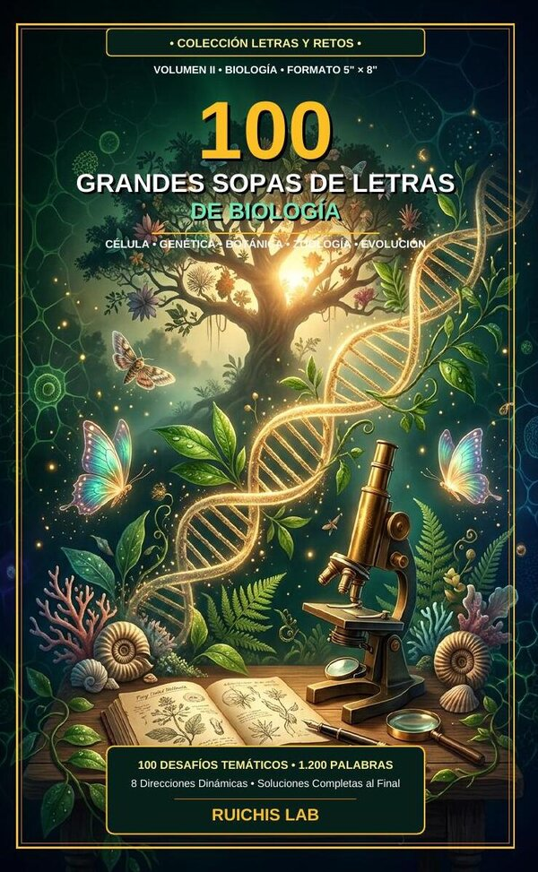

Colección Letras y Retos • Español • Edición Bolsillo 5" × 8" • 132 págs.
100 Grandes Sopas de Letras de Biología
Colección Letras y Retos (Vol. II) • Célula • Genética • Botánica • Zoología • Evolución

Sinopsis
Explora los fundamentos de las ciencias de la vida mientras ejercitas tu agilidad mental. El Volumen II de la Colección Letras y Retos reúne 1.200 términos esenciales de biología celular, genética molecular, botánica, zoología, ecología y evolución.
Qué incluye esta edición
- 100 desafíos temáticos dedicados a las ciencias biológicas y la naturaleza (1.200 palabras).
- Ideal para estudiantes, docentes, lectores científicos y amantes de los retos mentales.
- Formato compacto 5" × 8" de 132 páginas con diseño limpio de letra clara y soluciones incluidas.
Introducción al Volumen II: El Léxico de la Vida
«Al rastrear términos como mitocondria, ribosoma, cromosoma, fotosíntesis o filogenia entre las letras entrelazadas, el cerebro refuerza simultáneamente la memoria visual, la precisión ortográfica y el dominio conceptual de la biología.»
Otros libros de Ruichis Lab
- Productividad Asimétrica — El arte de hacer en dos horas lo que a otros les lleva una semana
- Asymmetric Productivity — The Art of Doing in Two Hours What Takes Others a Week
- 100 Grandes Sopas de Letras de Cultura General — Colección Letras y Retos (Vol. I) • Historia • Ciencia • Arte • Geografía • Filosofía